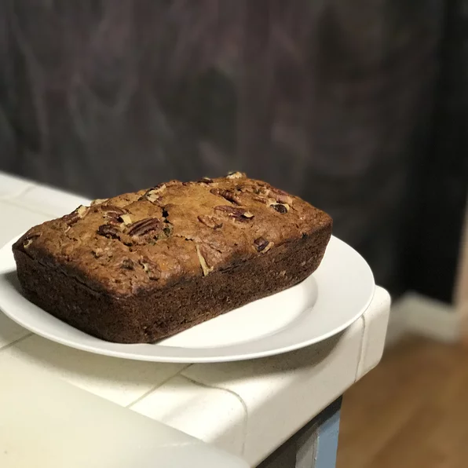

Banana Banana Bread

Description
Banana Bread full of delicious banana flavor! Check out the ingredients and steps to make it below.
Ingredients
- 2 cups all-purpose flour
- 1 teaspoon baking soda
- 1/4 teaspoon salt
- 1/2 cup butter
- 3/4 cup brown sugar
- 2 eggs, beaten
- 2 1/3 cups mashed overripe bananas
Steps
- Preheat oven to 350 degrees F. Lightly grease a 9x5 inch loaf pan.
- In a large bowl, combine flour, baking soda and salt. In a separate bowl, cream together butter and brown sugar.
Stir in eggs and mashed bananas unti well blended. Stir banana mixture into flour mixture; stir just to moisten.
Pour batter into prepared loaf pan.
- Bake in preheated oven for 60 to 65 minutes, until a toothpick inserted into center of the loaf comes out clean. Let bread cool in pan for 10 minutes, then turn out onto a wire rack.